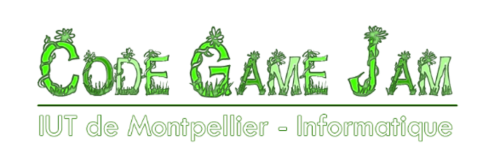

Développé en seulement 48 heures lors de la Code Game Jam 2024, ce jeu a remporté le prestigieux Prix du Public. Il s'agit d'une expérience narrative immersive créée avec le moteur Godot, mettant l'accent sur l'ambiance et le gameplay interactif.